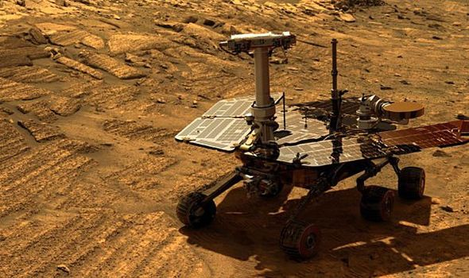
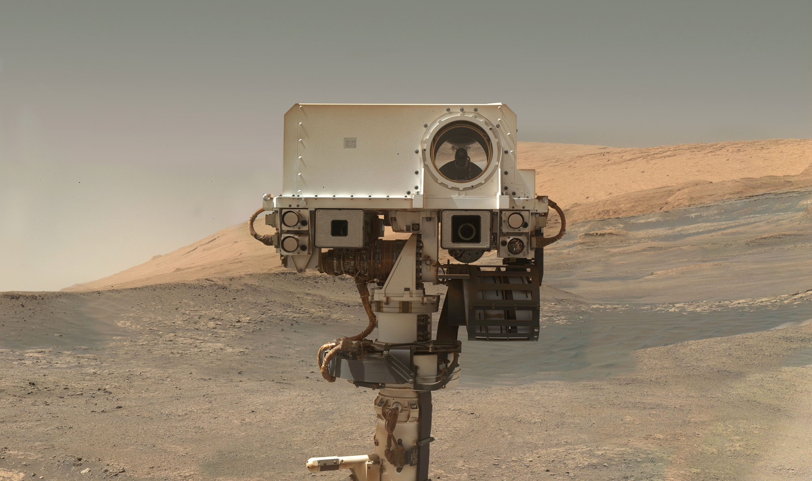

The Mars Exploration Program (MEP)
NASA has launched a few rovers over the years, and plan to launch another one come 2021, which is an improved rover modeled on Curiosity's structure.  
But this site will focus on Opportunity, Spirit, and Curiosity. These three rovers are part of NASA's Mars Exploration program, and is working to understand the formation and early evolution of Mars as a planet, the history of geological and climate processes that have shaped Mars through time, the potential for Mars to have hosted life (its “biological potential”), the future exploration of Mars by humans, and how Mars compares to and contrasts with Earth. The MEP's mission statement is to explore Mars and to provide a continuous flow of scientific information and discovery through a carefully selected series of robotic orbiters, landers and mobile laboratories interconnected by a high-bandwidth Mars/Earth communications network.
All content on this site is from NASA.